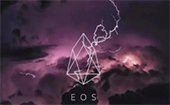

- 最新动态
- 火币HT完成一季度回购 锁仓但不销毁
- 加密货币交易所进入洗牌期
-
代表被爆虚假身份，ZPER仍按计划ICO
Midrate的代表Lee Sueng-heang因虚假学历，经历自行辞退，但是仍然进行虚拟货币ZPER的ICO。ZPER认为虚假身份...
快讯君 04月27日 21:27 ZPER -
助力云计算：前Blockstream开发者推进分布式应用开发
重塑互联网？这不是电视里的笑话，这是区块链开发者们的目标，对Ben Gorlick和Johnny Dilley来说也不例外。而...
区块网 04月27日 19：09 Crowd Machine -
区块链商业平台使用人工智能简化网上购物
一个基于区块链的商业平台开展了一项计划，可以简化网上购物流程，同时也能提供有意义的回报奖励，帮助消费者...
36氪 04月26日 3：27 Connor Blenkinsop
-
话题:可以抵押BTC、ETH获得贷款的加密平台MoneyToken网易星球、TFBOYS粉丝团都搞区块链？

-
话题:可以抵押BTC、ETH获得贷款的加密平台MoneyToken网易星球、TFBOYS粉丝团都搞区块链？
网易发布基于区块链的生态价值共享平台“星球”，目前尚处于内测中，据了解，星球基地通过区块链加密存储...
同花顺 06月25日 16：09 MoneyToken -

区块链与无人机结合的实际案例
区块链技术发展至今，在底层技术不断取得突破的现在，也在寻找更多可以落地的应用场景。当下最为瞩目的就是...
电子发烧友 06月25日 10：09 鼎酷IOT部落 -
SKYF推区块链无人物流平台 货运无人机前年完成首飞
3月1日，SKYFchain启动了ICO预售。它是首个基于智能合约区块链技术、用于无人货运物流的B2R(企业对机器人，注意...
电子发烧友 06月05日 16：09 杨薇 -
代表被爆虚假身份，ZPER扔按计划ICO
midrate的代表Lee Sueng-heang因虚假学历，经历自行辞退，但是仍然进行虚拟货币APER的ICO。ZPER认为虚假身份的代...
金色财经 06月05日 09：19 小草
-
快讯
更多> -
4分钟前
比原链即将迎来主网上线
【比原链即将迎来主网上线】比原链官网公众号发文《比原链|共建生态，拥抱未来》，文中指出，继比原链Tensority算法细节发布之后，比原链即将迎来主网上线人工智能和区块链结合的时代也将开启。
-
6分钟前
比原链即将迎来主网上线
【比原链即将迎来主网上线】比原链官网公众号发文《比原链|共建生态，拥抱未来》，文中指出，继比原链Tensority算法细节发布之后，比原链即将迎来主网上线人工智能和区块链结合的时代也将开启。
-
6分钟前
比原链即将迎来主网上线
【比原链即将迎来主网上线】比原链官网公众号发文《比原链|共建生态，拥抱未来》，文中指出，继比原链Tensority算法细节发布之后，比原链即将迎来主网上线人工智能和区块链结合的时代也将开启。
-
国家时事
更多> - 错在力挺薛之谦？金立60亿营销费打水漂究竟为何？
- 区块链降温是一件好的事情，区块链企业低调、务实一些好，可以更踏实的去把项目去做好。
- 工信部信软司助力区块链产业 可信区块链联盟成立
- 银行助力雄安新区：投放最先进技术 种树也用区块链。
- 工信部信软司助力区块链产业
- 工信部信软司助力区块链产业 可信区块链联盟成立
- 银行助力雄安新区：投放最先进技术 种树也用区块链。